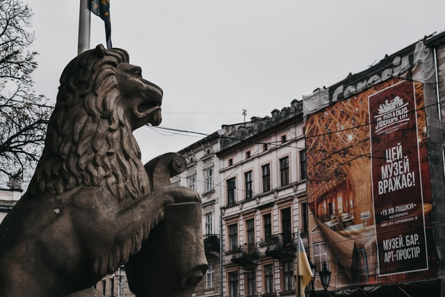

History of Lviv
Lviv history is as colorful and amazing as a city itself. It is filled with interesting events and outstanding figures. Lviv was founded during the reign of Danylo Romanovych. It is named after his son – Prince Lev. The first mention of the city dates from 1256. In the middle of the XIV century the city was conquered by Casimir III, thus Lviv became part of the Kingdom of Poland (later the Commonwealth) for more than 400 years. More and more people of different nationalities, including merchants and artisans arrived to Lviv.
Today Lviv is more than 760 years old and it has lots of stories to tell you! City situated on the crossing of two profitable trade routes developed and flourished rapidly and became one of main trade centers of medieval Europe. Afterwards while being a part of different countries, Lviv borrowed some parts of culture and knowledge from invaders. Later on it transformed not only to an architectural gem, but also to the modern capital of scientific, spiritual and artistic life.
Nowadays, Lviv remains an important transport hub. Roads and railways of European importance pass through our city. Danylo Halytskyi Lviv Airport annually opens new destinations and increases passenger traffic and is the largest airport in Western Ukraine. Considering the industry area, Lviv continues to be one of the most recognizable city–brands in Ukraine. It is here that the engineering corporation Electron creates electric transport for the whole country, and Lviv breweries and chocolate factories continue centuries–old traditions. The city’s IT industry is growing rapidly and is now an integral part of the economy.